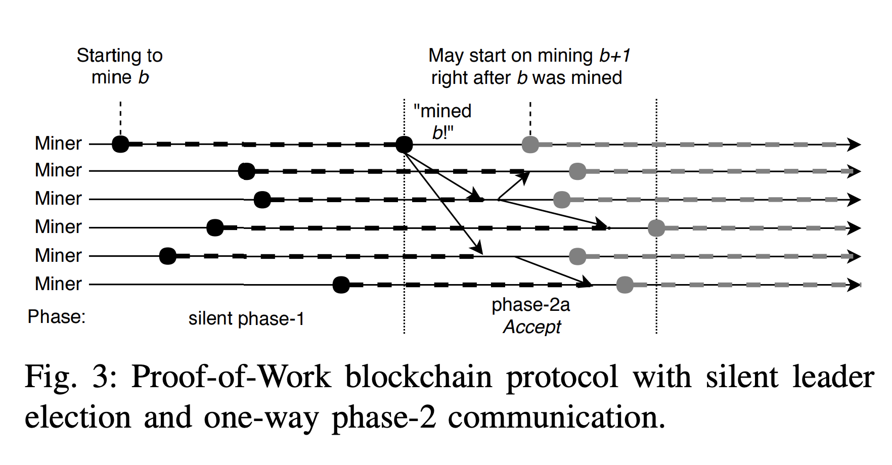
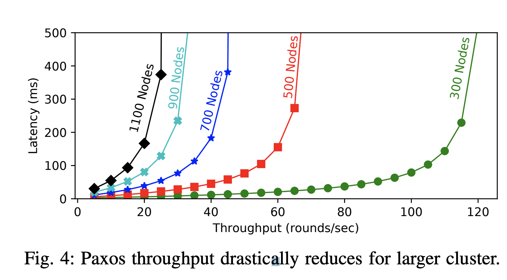
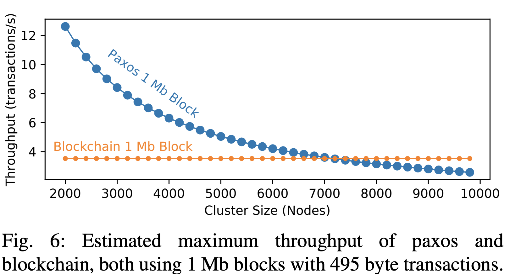

The consensus is a kind of network protocols that allows participants of a distributed system to agree on the state of the value that is replicated in this network. This paper provides a comparison study from both perspectives Blockchain and Paxos consensus protocols. In both protocols, the main idea is reaching consensus.
In consensus protocols, the scalability of the protocol and the presence of Byzantine failures are two important things to determine how good is the protocol. Much effort has been put into making Paxos and its many variants to scale, but the truth is that it could never scale to the size of a blockchain based consensus, not on the Internet, at least.
Blockchain relies on proof of work (POW) to deal with Byzantine participants in open and permissionless. The POW is a piece of data which is costly and time-consuming to produce but easy for others to verify. Producing a POW involves solving a mathematical puzzle which requires trial-and-error. It is a GPU-intensive process involving hashing of data. Whichever miner solves the puzzle first gets the reward. Blockchain also has low throughput and high latency problems.
The classical consensus problem is described by two safety and one liveness properties.
Paxos satisfies the safety properties of consensus even under asynchrony and arbitrary message loss. Paxos preserves safety under any condition and achieves liveness when conditions improve outside the impossibility realm. Paxos runs in three distinct phases:
The safety properties of Paxos are:
No value is chosen unless it is first proposed. (This gives validity.)
No two distinct values are both chosen. (This gives agreement.)
In liveness property, the protocol should terminate eventually. Suppose there is a single proposer, and that it survives long enough to collect a majority of acks and to send out accepts to a majority of the accepters. If everybody else cooperates, the protocol gets termination in 3 message delays.
In the blockchain approach, all transactions placed in blocks and each block refers to the previous one in the chain. Miners solve a computational puzzle to validate the transactions in blocks and appends the blocks to the blockchain. Blockchain reached consensus by using PoW.
POW blockchains rely on Nakomoto consensus, which has somewhat different, yet comparable properties than the classical consensus. The biggest difference between the two is the probabilistic nature of Nakomoto consensus, resulting in a slight chance of reversing the transaction. The probability of reversal, however, diminishes quickly with the age of the block.
Probabilistic Agreement: For a blockchain of length n, any two nodes will return the same chain prefix of length n−r with probability greater than p. The probability p is controlled by varying the size of r, with larger r increasing the p. The tailing blocks of length r still have a larger chance of reversal.
Transaction Validity:
Well-behaved nodes only accept blocks with valid and not spent transactions. Malicious nodes need to have the majority of computing power to put the invalid transaction on the chain and maintain it as the longest chain in the network.
Probabilistic Termination: The consensus is probabilistic with the chance of reversal becoming negligible after the sufficient number of r blocks are added to the chain after.
The blockchain and Paxos have a leader to commit to a ledger. In the blockchain, the leaders called miners. Miners solve the puzzle and first one who able to solve the puzzle first become a leader for a round without communications between miners.

The difference between the two machines is in blockchain produced a fork because there is a chance more than one minor can solve the puzzle and append it to the chain. While in Paxos, there is only one leader per time. To solve this problem, the longest chain will stay for future appending.
Paxos has many ways of communications until the consensus reached. The blockchain consensus protocol provides one way of communication which is a probabilistic consensus from minors to participants.
The Paxos leader would struggle to maintain any reasonable commit throughput while receiving that many ack messages in each round. To avoid the problem with thousands of participants, the blockchain has only one way broadcast communication, which is propagated from the leader to the participants via a gradual gossip protocol.

Comparing popular POW Nakamoto consensus with Byzantine consensus solutions, such as Byzantine Paxos reveals major differences. Whereas Nakamoto consensus has probabilistic guarantees for termination, agreement, and validity, the classic Byzantine Consensus has deterministic guarantees for them. However, the performance of Nakamoto consensus is far less sensitive to the number of participants than that of Byzantium Paxos, making it more suitable for public environments without further changes.
In Paxos, there is a single leader for many rounds and that helps for not doing phase 1 again if the leader stays for many rounds. In the blockchain, bitcoin-ng do the same thing by controlling the ledger for a duration of time.
There will be some benefits from using TLA+ in the blockchain. Using TLA+ to model timing, safety, and partition assumptions. These will lead us to identify the vulnerabilities. Another benefit of using formal methods and TLA+ for modeling blockchain protocols is in the design process.
Paxos is designed for small clusters, relatively quick operation latency and high throughput. The communication in a large cluster with Paxos protocols could be a bottleneck for a Paxos round leader. In typical small deployments, the messaging requirement for a round is manageable. Blockchain, on the other hand, runs on many thousands of participants and trades small operation latency for predictable throughput in large deployments. Blockchain scale with thousands of nodes, network bandwidth becomes the limiting factor, since sending an accept message to all participants is problematic even with the smallest possible blocks.

Figure 6 shows our estimated maximum throughput for Paxos and blockchain. Both protocols use 1 Mb blocks filled with transactions of 495 bytes. For Paxos, paper assumed the leader is responsible for sending blocks to each follower over a 100 Mbit connection. At the blockchain scale, a lower baseline throughput is offset by its stability and better performance in large deployments.
The latency of PoW blockchain depends on the time required to mine sufficient number of blocks to make reversing the consensus highly improbable. In Bitcoin this is typically 6 blocks, each taking roughly 10 minutes to mine. However, transactions may spend some additional time in the pool before being picked up by the miners and added to the block, and the queuing effect of the pool may drive transaction commit latency above the 60-minute minimum. More recent blockchains that offer irreversibility of transactions once the block is appended to the chain can greatly reduce the minimum latency to the time of mining/adding one block.